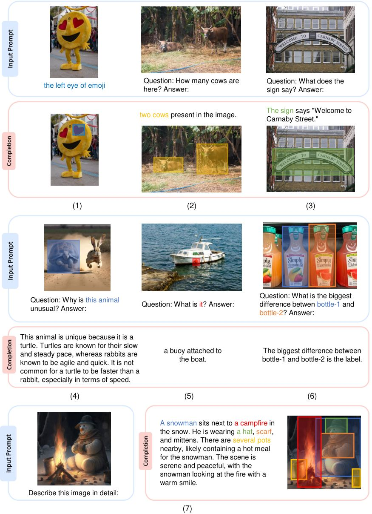
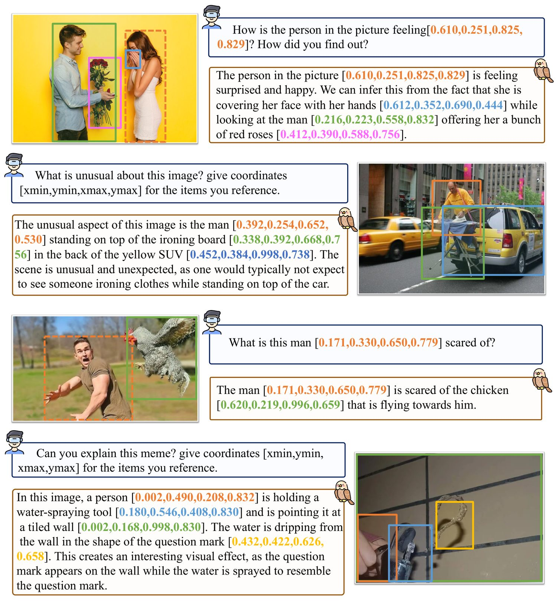
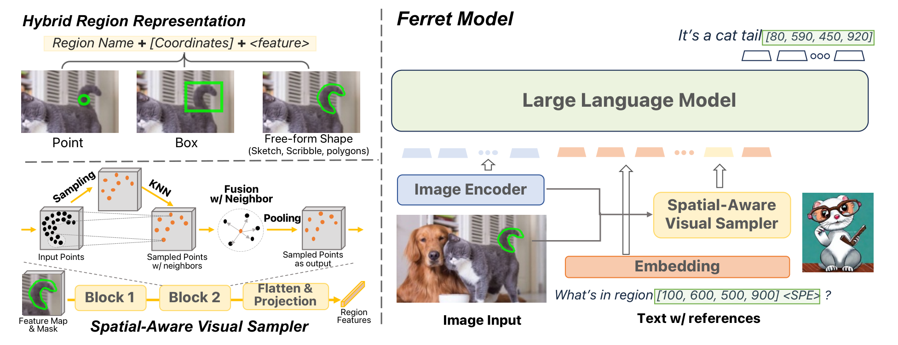
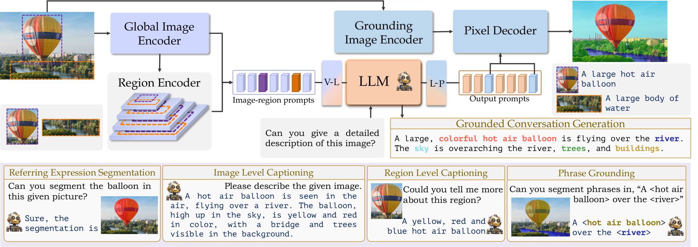
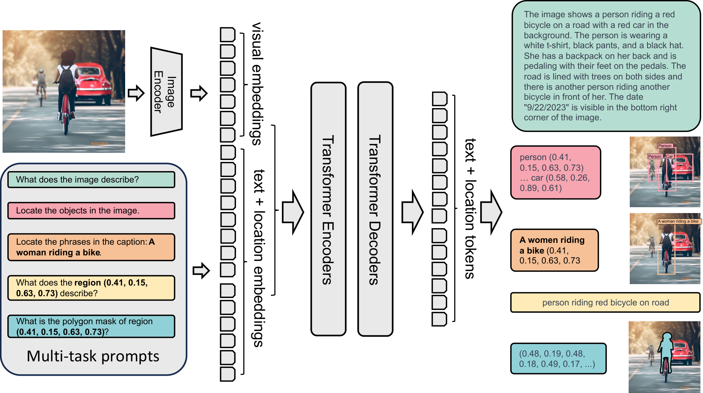

第 21 章 细粒度感知与视觉定位
在经典的多模态大模型（MLLM）范式中，模型通常将整幅图像作为全局输入，并通过跨模态自注意力输出一段宏观的文本描述。然而，这种“粗粒度整图感知（Coarse-Grained Image-Level Perception）”在面对真实的复杂视觉世界时显得捉襟见肘：当画面中存在数十个密集的微小物体、重叠的人群遮挡、或是用户明确指代“画面左上方第三个穿格子衬衫的人手里的红色咖啡杯”时，传统的图文多模态模型往往会陷入灾难性的幻觉。模型知道图里有“人”和“咖啡杯”，但无法精准回答“人在哪里”、“咖啡杯在哪个空间坐标”、“这个咖啡杯与旁边另一个纸杯的区别是什么”。
为了跨越从“宏观整体感知”到“微观精细空间理解”的技术天堑，视觉定位大模型（Grounded MLLMs）应运而生。视觉定位的核心目标，是将自然语言中任意抽象的名词短语或复杂关系描述，与图像中具体的几何空间基元（如点 Point、归一化边界框 Bounding Box、多边形 Polygon、乃至像素级分割掩码 Segmentation Mask）建立双向、可微分且严格对齐的映射关系。
从微软 Kosmos-2 首次将定位框定义为文本序列中的特殊离散 Token，到 Shikra 证明普通纯文本数字坐标即可直接激发大语言模型的原生空间几何感知的突破，再到苹果 Ferret 支持任意自由形状混合区域输入，以及 GLaMM 与 Florence-2 实现像素级掩码密集生成与多任务感知大一统，细粒度视觉定位不仅彻底重塑了自动驾驶感知、工业质检与医疗影像分析的工程实践，更为具身智能机器人执行物理空间抓取与精准操作奠定了核心空间认知基石。
计算机视觉领域的空间定位研究经历了由“专用判别式架构”向“自回归生成式统一架构”的深刻范式迁移：
- 经典判别式时代（2015–2021）：以 Faster R-CNN、YOLO、DETR 以及 GLIP (Grounded Language-Image Pre-training) 为代表。这一阶段的模型依赖专门的区域建议网络（RPN）或二分图匹配损失，定位框的预测是通过连续回归头（Regression Head: $\Delta x, \Delta y, \Delta w, \Delta h$）完成的。这类模型擅长封闭类别的快速检测，但完全缺乏开放域的常识推理、多轮指代交互与长文本逻辑分析能力。
- 离散空间标记时代（2023上半年）：微软在 2023 年 6 月推出 Kosmos-2（arXiv:2306.14824），开创性地提出了将图像空间划分为 $32 \times 32$（共 1024 个网格单元）的空间位置代码本，并引入了诸如
<p>、<box>、<loc0>...<loc1023>的特殊位置标记。定位任务被首次完美形式化为语言模型的标准词表预测任务。 - 纯文本自然坐标时代（2023下半年）：感叹于专用标记词表的冗余，Shikra（arXiv:2306.15195）提出了震撼性的极简范式：无需任何特殊位置词表（No Extra Vocab），直接使用普通 ASCII 字符格式的自然数字序列
[xmin, ymin, xmax, ymax]（取值范围 $0 \sim 999$）。Shikra 证明了强大的 LLM 具备原生学习连续几何坐标数值分布的能力，这一设计极大简化了分词器架构，并被后来的 Qwen-VL、InternVL 全面采纳。 - 混合形状与像素掩码大一统时代（2024–2026）：苹果推出的 Ferret 突破了矩形框的几何刚性限制，支持点、涂鸦（Scribble）与任意复杂多边形的输入表征；GLaMM 进一步串联 SAM（Segment Anything）解码头，首次实现了自然多轮对话中的“像素级接地对话（Grounded Conversation Generation）”；而微软 Florence-2 则通过数十亿量级标注图引擎，将 OCR、检测、分割与密集描述统合在单一轻量模型中。

21.1 核心任务定义与空间几何范式
在细粒度视觉定位的学术体系与工程落地中，模型主要需要解决以下四大经典空间感知任务：
- 指代表达理解（Referring Expression Comprehension, REC）： 给定输入图像 $I$ 以及自然语言形式的查询短语 $Q$（例如：“坐在长椅左侧、正在阅读报纸的老人”），模型需要预测出该目标在图像中的精确归一化空间包围框坐标 $B = [x_{\min}, y_{\min}, x_{\max}, y_{\max}]$，其中坐标通常归一化至 $[0, 1000]$。
- 指代表达生成（Referring Expression Generation, REG）： REC 的逆任务。给定图像 $I$ 以及一个指定的空间坐标区域 $B$，模型需要生成一段自然语言文本，精准描述该框内物体最具辨识度的独有特征，使其能够明确区别于场景中的其他同类物体。
- 密集图文接地（Dense Visual Grounding / Phrase Grounding）：
模型在对整幅图像进行长篇大论的叙述或问答时，自动在生成的文本句子中用边界框标记出所提及的每一个关键实体。例如：
画面前景有一只 <box>[120, 340, 280, 560]</box> 金毛犬，正在欢快地追逐一个 <box>[450, 610, 510, 680]</box> 红色皮球。 - 指向性视觉问答（PointQA / RegionQA）： 用户在图像中通过点击一个像素点 $(x, y)$ 或框选一个局部区域，向模型提出针对该局部区域的专门疑问。例如：“这个零件上的细微裂纹属于几级疲劳损伤？”、“这个植物叶片上的黄斑是哪种真菌感染？”。
21.2 空间坐标的 Token 化与表征范式对比
大语言模型本质上是离散符号处理器，而空间几何坐标本质上是二维欧几里得空间中的连续实数向量 $(x, y) \in [0, W] \times [0, H]$。如何抹平这层鸿沟？业界形成了三种截然不同的表征策略：
| 表征流派 | 代表工作 | 词表改动 | 输入/输出格式 | 核心优势 | 核心局限 |
|---|---|---|---|---|---|
| 网格空间特殊标记 (Special Token Grid) |
Kosmos-2, Pix2Seq | 新增 $N$ 个空间标记（如 <loc0> 到 <loc1023>） |
<loc120><loc340><loc280><loc560> |
空间语义极其明确，不会与普通文本数字混淆 | 修改分词器 vocab，破坏预训练词表稳定性 |
| 纯文本数字坐标 (Natural Text ASCII) |
Shikra, Qwen-VL, InternVL | 完全零改动（复用原有数字字符） | [120, 340, 280, 560] |
架构极度纯粹，兼容任意通用预训练 LLM | 长数字生成消耗更多 Token，数值推理需强化微调 |
| 连续回归与离散混合 (Hybrid Continuous-Discrete) |
VisionLLM, Ferret | 无标记扩充，外挂连续坐标/掩码预测头 | 隐向量通过 FFN 回归或送入 SAM 解码器 | 具备连续亚像素级（Sub-pixel）极高定位精度 | 打破了纯自回归范式，部署需额外并行推理管道 |

21.3 任意形状区域表征：从 BBox 到苹果 Ferret 混合空间采样
标准的矩形边界框（Bounding Box）虽然在工程上极其易于量化和传输，但其固有的几何矩形刚性带来了一个严重的感知失真缺陷：**前景-背景混淆（Foreground-Background Ambiguity）**。
例如，当需要定位一条细长的对角线倾斜的滑雪板、一条蜿蜒的小蛇、或者一个倒在斜坡上的人体时，一个外接矩形边界框内往往包含超过 70% 的无关背景像素。如果直接对该边界框内的特征进行简单的平均池化（Average Pooling）或 RoIAlign，模型吸收的大部分特征都是背景噪音，从而导致细粒度推理失败。

苹果团队在 Ferret 中设计了突破性的**空间感知连续采样器**，使模型能够接收点、涂鸦划线以及不规则二值掩码作为输入指代。其核心步骤如下：
- 离散点与几何连续多边形栅格化： 用户输入的任意指代区域被统一表示为一个二值空间掩码矩阵 $M \in \{0, 1\}^{H \times W}$。对于单个点，定义其为高斯平滑核；对于连续涂鸦，定义为其形态学膨胀走廊。
- 边界框提取与局部特征切片： 首先提取该掩码的外接最小矩形包围框，利用连续插值从主视觉编码器特征图 $F_{\text{feat}} \in \mathbb{R}^{h \times w \times C}$ 中截取出候选局部特征块 $F_{\text{local}}$。
- 空间感知加权采样（Mask-Guided Spatial Pooling）： 将二值掩码 $M$ 双线性下采样至特征图尺度得到掩码权重 $W_{\text{mask}} \in [0, 1]^{h' \times w'}$。在采样过程中，不仅依据空间几何坐标进行双线性插值，更根据 $W_{\text{mask}}$ 对采样点进行加权与过滤，彻底剔除包围框内部的背景噪声： $$F_{\text{region}} = \frac{\sum_{i, j} W_{\text{mask}}(i, j) \cdot F_{\text{local}}(i, j)}{\sum_{i, j} W_{\text{mask}}(i, j) + \epsilon}$$
- 点云密度自适应下采样： 对于复杂的自由几何形状，Ferret 进一步将有效前景网格转化为三维点集（$x, y$ 空间坐标 + 特征通道），利用最远点采样（Furthest Point Sampling, FPS）选取固定数量（如 32 个）极具空间代表性的锚点，并通过轻量交叉注意力将其压缩为一组固定长度的区域 Token 注入语言模型。
21.4 像素级密集分割与指代对话：GLaMM 与 Florence-2
当定位的粒度从矩形包围框进一步下沉到每一个像素的归属时，我们便迈入了**像素级接地（Pixel-Level Grounding）**的至高境界。在这一前沿领域，GLaMM 与 Florence-2 代表了两种极具启发性的工程巅峰。

MBZUAI 与阿卜杜拉国王科技大学在 2023 年底推出的 GLaMM 解决了多模态对话中“边说话边抠图”的端到端难题：
- 自回归文本流与密集掩码解耦协作：GLaMM 的语言模型在生成包含实体的文本时，会在目标词汇后插入一个特殊的语义标记
<SEG>。例如：在草地上有一只可爱的 <phrase>小狗</phrase><SEG>。 - SAM 提示生成器（Prompt Generator for SAM）：语言模型对应于
<SEG>位置的输出隐层向量 $h_{\text{seg}} \in \mathbb{R}^{D}$ 并不是文本词，而是被当作一个高度提炼的几何语义控制向量。该向量被送入一个轻量 MLP 映射为密集掩码提示嵌入（Dense Prompt Embeddings），直接驱动预训练的 Segment Anything Model (SAM) 的掩码解码器（Mask Decoder），在单次前向中输出当前物体的绝对高精度像素分割二值掩码！ - 高质量密集接地数据集 GranD：为了训练全套管线，团队构建了包含 750 万高质量图像-文本-掩码对的 GranD 数据集，彻底治愈了过去模型在生成复杂描述时分割边缘粗糙的痼疾。

21.4.3 Florence-2 视觉基础模型全任务序列化解构
微软在 2023 年底推出的 Florence-2（arXiv:2311.06242）代表了密集感知与视觉定位的另一种工业级极致。与依赖外挂 SAM 解码器的 GLaMM 不同，Florence-2 采用了纯净的 Sequence-to-Sequence 编码器-解码器架构（DaViT 视觉骨干 + 标准多模态 Transformer 解码器），通过单一模型将几乎所有空间感知任务完全表示为文本序列映射。
其核心技术创新体现在以下三个维度：
- 任务提示词统领空间接口（Task-Prompt Driven Protocol）：Florence-2 将各种复杂的感知任务定义为特殊的文本提示标记。例如输入
<OD>执行通用目标检测；输入<CAPTION_TO_PHRASE_GROUNDING>并附带文本，执行短语定位；输入<REFERRING_EXPRESSION_SEGMENTATION>，直接将分割多边形转换为一串连续的离散坐标点列[x1, y1, x2, y2, ..., xn, yn]。这种设计彻底摆脱了传统检测网络中繁杂的 NMS（非极大值抑制）与锚框机制。 - 数据飞轮 FLD-5B：定位模型性能的上限取决于数据分布的多样性。微软团队通过自动标注飞轮构建了包含 54 亿视觉注记的 FLD-5B 数据集，涵盖 1.26 亿幅真实图像、5 亿个精准包围框以及数亿条图文短语对齐，为模型注入了无与伦比的开放域细粒度辨识鲁棒性。
- 轻量级高吞吐部署优势：Florence-2 提供了 0.23B（Base）和 0.77B（Large）两个极致精炼的版本。得益于 DaViT 高效的局部窗口与跨窗口注意力机制，模型在普通单卡消费级 GPU 上即可达到百帧以上的推理吞吐，成为端侧低延迟工业质检、机器人感知流水线的首选基座。
21.4.4 多尺寸目标与长尾概念的空间对齐攻坚
在真实的视觉定位落地场景中，模型常常需要面对尺度跨度超过 100 倍的极端目标分布——从占据全图 80% 视野的整车轮廓，到仅占几个像素的精密电路板焊点缺陷。传统固定网格量化在此类极端尺度下极易退化。
当前工业界针对多尺度与长尾空间对齐采取的核心解决方案包括：
- 特征金字塔与多尺度 RoI 交叉注意（Multi-Scale Cross-Attention）：在视觉编码器与语言解码器之间建立多尺度特征连接，浅层高分辨率特征专门用于捕获微小边界的高频纹理，深层低分辨率特征用于推断主体的语义类别与上下文从属关系。
- 相对坐标与分层局部裁剪（Hierarchical Zoom-in Grounding）：针对极小目标，模型采用“两级级联推断”策略——第一级先预测粗粒度候选兴趣区（RoI），第二级对该候选区域进行高倍率局部高清裁剪（Crop & Zoom），并在局部相对坐标系下进行亚像素级精细定位，随后通过全局几何仿射逆变换映射回全图原坐标。
21.5 数据构造引擎与损失平衡配方
训练一个高精度的细粒度定位模型，其数据与工程难度往往远超常规图文对话模型。其核心挑战在于：**如何防止模型退化为只会报坐标的生硬检测器，同时避免大语言模型在多轮对话中因坐标噪音而丢失语言表达的文采与逻辑深度？**
- 高质量接地数据合成引擎（Data Engine）：
依赖人工手动在图上框选每一个短语的成本极为高昂。工业界（如 Florence-2、GranD）普遍采用由内向外的自举闭环生成管线：
- 初始提议：使用高性能目标检测器（DINO、Grounding-DINO）与 SAM 在未标注的大规模图文网页数据中提取高质量包围框与密集掩码。
- 过滤与提纯：借助 CLIP 评分与文字-图像重叠度过滤掉低置信度噪点框；使用 GPT-4V 基于过滤后的框生成高质量、富有语境的复杂长文本指代表达（Referring Expressions）。
- 交叉验证：将生成的描述文本重新送入独立检测模型，计算预测框与原始真实框的交并比（Intersection over Union, IoU）。仅保留 $\text{IoU} \ge 0.85$ 的硬核强对齐三元组 $(I, T, B)$。
- 坐标损失与文本损失的动态平衡：
在自然数字坐标范式（如 Shikra）中，由于坐标表现为纯文本 Token，模型直接使用自回归交叉熵损失进行训练：
$$\mathcal{L}_{\text{total}} = -\sum_{t=1}^N \log P(w_t \mid w_{
522，虽然对语言损失惩罚微弱，但对空间定位交并比意味着十几像素的严重漂移）。 推荐解决方案：- 在损失计算时对坐标 Token 赋予专门的损失加权权重：$\lambda_{\text{coord}} = 2.0 \sim 3.0$。
- 或者引入连续辅助回归头，在计算交叉熵的同时施加广义交并比损失（Generalized IoU, GIoU Loss）与 Smooth L1 损失： $$\mathcal{L}_{\text{box}} = \lambda_{\text{ce}} \mathcal{L}_{\text{ce}} + \lambda_{\text{l1}} \|B_{\text{pred}} - B_{\text{gt}}\|_1 + \lambda_{\text{giou}} \mathcal{L}_{\text{giou}}(B_{\text{pred}}, B_{\text{gt}})$$
21.5.2 细粒度定位核心基准与误差诊断体系
在评测 Grounded MLLM 的空间定位能力时，工业界与学术界建立了一套标准化的基准图谱与细粒度误差归因体系。单一的准确率指标往往掩盖了模型在不同空间拓扑下的真实弱点。
主流定位基准可划分为三大流派：
- 标准指代表达理解（RefCOCO / RefCOCO+ / RefCOCOg）：最权威的基准测试集。其中 RefCOCO 包含丰富的绝对方位描述（如“左边的那只猫”）；RefCOCO+ 严格禁用了所有绝对空间方位词，强迫模型必须完全依赖外观属性（如“黄色条纹、毛茸茸、卧在垫子上的猫”）进行辨识，是检验视觉-语言细粒度属性绑定的终极试金石；RefCOCOg 则侧重于包含复杂长句、多重修饰语与因果关系的指代。
- 密集指代与对话定位（Visual Genome / Flickr30k Entities）：考察全图多实体同时定位能力，要求模型在解析整段故事或复杂场景说明时，不遗漏任何从属子对象。
- 复杂开放词表目标检测（LVIS / ODinW）：测试模型在数千种长尾生僻概念、微小工业零件与特种动植物上的零样本（Zero-Shot）定位能力。
通过对当前顶尖 Grounded MLLM（如 Qwen2-VL-72B、InternVL2-76B）在 RefCOCO+ 错误样本的系统归因，定位失败通常集中在以下四种病态模式：
- 主宾从属混淆（Subject-Object Reversal）： 面对指令“骑在马背上的人”，模型往往预测出一个将“人”与“马”全部囊括的大框，或者误将“马”的包围框作为输出。这反映出 Transformer 交叉注意力机制在处理不对称语法关系（主语 Head 与从属修饰语）时的语义解缠结不彻底。
- 同类密集遮挡下的多义歧义（Dense Instance Ambiguity）： 在密集货架或拥挤人潮中，指令“穿蓝鞋的小女孩”周围可能同时存在若干个部分特征相似的候选对象。当空间分辨率受限或 Token 压缩过度时，模型预测的框坐标常常在两个临近物体之间产生“空间重叠的折中平均（Averaging Collapse）”，输出一个落在虚空处的无效坐标。
- 绝对坐标量化失真（Quantization Drift）： 在将 1000x1000 离散空间映射回高分辨率原始图像（如 4K 工业监控画面）时，每一个离散单位意味着 4 像素的几何误差。对于尺寸小于 20x20 的微小瑕疵或螺丝钉，离散化带来的系统误差直接导致 IoU 指标暴跌至 0.5 门槛以下。
- 语言先验压制视觉几何（Linguistic Prior Dominance）： 当文本提示中出现极其罕见的异常组合时（例如“被狗追逐的巨大机械战警”），语言模型先验会本能地倾向于寻找普通的“人”或“车”，甚至在图像完全不存在对应物体时依然强行输出高置信度的虚假边界框。
21.5.3 空间几何数据增强与抗过拟合策略
视觉定位模型的训练极易在特定坐标区间产生“位置偏差（Position Bias）”。例如，由于公开数据集中人类摄影习惯普遍倾向于将主要主体置于画面中心（Center Bias），直接微调的模型在测试时倾向于过度预测中心区域的坐标。为此，工业级训练系统必须引入以下几何数据增强与规范化技巧：
- 随机尺度马赛克与几何仿射变换（Mosaic & Affine Perturbation）：将 4 幅不同的图像随机裁剪、缩放并拼接为一张大图，同时精确变换各物体包围框坐标。这迫使模型在极端不平衡的尺度比例下感知目标。
- 坐标抖动正则化（Coordinate Jittering）：在 REG（指代表达生成）训练中，对输入的真实框施加小幅度高斯扰动（通常为框宽高的 5%），提高语言模型对非完美对齐候选区域的鲁棒性。
- 负采样硬样本对抗训练（Hard Negative Mining）：构建“不存在的目标（Absent Targets）”图文对，要求模型在面对当前图像中缺失的指代描述时，明确输出拒绝标记或指定特定负向坐标，彻底抑制模型的强制输出幻觉。
21.5.4 从 2D 边界框到 3D 物理空间定位的演进
随着智能座舱、具身机器人与空间计算（Spatial Computing）的爆发，多模态大模型的细粒度感知正在不可逆转地从二维像素平面跃迁至三维物理空间。
在三维定位大模型中，目标表征不仅包含二维框坐标，更必须回归物体的绝对空间几何中心 $(X, Y, Z)$、三维长宽高尺寸 $(D_x, D_y, D_z)$ 以及航向角偏转姿态（Yaw, Pitch, Roll）。模型通过结合激光雷达点云（LiDAR Point Clouds）、立体双目视觉或多视角的连续时间流，将文本空间坐标转化为机械臂可直接执行逆运动学规划（Inverse Kinematics）的 6-DoF 刚体抓取位姿。这一跃迁标志着细粒度感知真正具备了干预物理世界的闭环能力。
21.6 动手实战：构建端到端 Grounding MLLM 评估与推理器
为了在实际生产中快速接入与评估视觉定位模型，以下代码给出了一个工业级标准实现。它涵盖了图像坐标归一化、提示词格式化、模型预测坐标解析以及自动化交并比（IoU）度量计算的全套流程。
# -*- coding: utf-8 -*-
"""视觉定位模型（Grounded MLLM）坐标解析、格式化与精度评测全套实现
包含：归一化坐标双向映射、正则解析、IoU/GIoU 几何交并比计算
"""
import re
import math
from typing import List, Tuple, Dict, Optional, Union
class GroundingToolkit:
@staticmethod
def normalize_box(box: List[float], img_w: int, img_h: int, target_range: int = 1000) -> List[int]:
"""将绝对像素坐标 [xmin, ymin, xmax, ymax] 映射为归一化离散整数坐标"""
xmin, ymin, xmax, ymax = box
n_xmin = int(round((xmin / img_w) * target_range))
n_ymin = int(round((ymin / img_h) * target_range))
n_xmax = int(round((xmax / img_w) * target_range))
n_ymax = int(round((ymax / img_h) * target_range))
# 边界裁剪防溢出
return [
max(0, min(target_range, n_xmin)),
max(0, min(target_range, n_ymin)),
max(0, min(target_range, n_xmax)),
max(0, min(target_range, n_ymax)),
]
@staticmethod
def denormalize_box(norm_box: List[int], img_w: int, img_h: int, source_range: int = 1000) -> List[float]:
"""将归一化整数坐标还原为原始像素空间坐标"""
n_xmin, n_ymin, n_xmax, n_ymax = norm_box
return [
(n_xmin / source_range) * img_w,
(n_ymin / source_range) * img_h,
(n_xmax / source_range) * img_w,
(n_ymax / source_range) * img_h,
]
@staticmethod
def extract_boxes_from_text(response_text: str) -> List[Dict[str, Union[str, List[int]]]]:
"""从模型输出中抽取带有实体名词的坐标框
支持格式匹配：'[xmin, ymin, xmax, ymax]' 以及 '[xmin, ymin, xmax, ymax] '
"""
results = []
# 正则模式匹配：可选短语名称 + 坐标框
pattern = r'(?:([a-zA-Z\u4e00-\u9fa5\s]+)\s*)?(?:)?\[\s*(\d+)\s*,\s*(\d+)\s*,\s*(\d+)\s*,\s*(\d+)\s*\](?: )?'
matches = re.finditer(pattern, response_text)
for m in matches:
phrase = m.group(1).strip() if m.group(1) else "unlabeled_entity"
coords = [int(m.group(2)), int(m.group(3)), int(m.group(4)), int(m.group(5))]
results.append({"phrase": phrase, "box": coords})
return results
@staticmethod
def calculate_iou(box1: List[float], box2: List[float]) -> float:
"""计算两个边界框的标准 IoU (Intersection over Union)"""
x1_min, y1_min, x1_max, y1_max = box1
x2_min, y2_min, x2_max, y2_max = box2
inter_xmin = max(x1_min, x2_min)
inter_ymin = max(y1_min, y2_min)
inter_xmax = min(x1_max, x2_max)
inter_ymax = min(y1_max, y2_max)
inter_w = max(0.0, inter_xmax - inter_xmin)
inter_h = max(0.0, inter_ymax - inter_ymin)
inter_area = inter_w * inter_h
area1 = max(0.0, (x1_max - x1_min)) * max(0.0, (y1_max - y1_min))
area2 = max(0.0, (x2_max - x2_min)) * max(0.0, (y2_max - y2_min))
union_area = area1 + area2 - inter_area
if union_area <= 1e-7:
return 0.0
return inter_area / union_area
@staticmethod
def calculate_giou(box1: List[float], box2: List[float]) -> float:
"""计算两个边界框的 GIoU (Generalized Intersection over Union)
GIoU = IoU - (Area(C) - Area(Union)) / Area(C)，C 为包含两框的最小凸外接矩形
"""
x1_min, y1_min, x1_max, y1_max = box1
x2_min, y2_min, x2_max, y2_max = box2
inter_xmin = max(x1_min, x2_min)
inter_ymin = max(y1_min, y2_min)
inter_xmax = min(x1_max, x2_max)
inter_ymax = min(y1_max, y2_max)
inter_w = max(0.0, inter_xmax - inter_xmin)
inter_h = max(0.0, inter_ymax - inter_ymin)
inter_area = inter_w * inter_h
area1 = max(0.0, (x1_max - x1_min)) * max(0.0, (y1_max - y1_min))
area2 = max(0.0, (x2_max - x2_min)) * max(0.0, (y2_max - y2_min))
union_area = area1 + area2 - inter_area
if union_area <= 1e-7:
return -1.0
iou = inter_area / union_area
# 最小凸包矩形 (Enclosing Box C)
c_xmin = min(x1_min, x2_min)
c_ymin = min(y1_min, y2_min)
c_xmax = max(x1_max, x2_max)
c_ymax = max(y1_max, y2_max)
c_area = max(0.0, c_xmax - c_xmin) * max(0.0, c_ymax - c_ymin)
if c_area <= 1e-7:
return iou
giou = iou - (c_area - union_area) / c_area
return giou
@classmethod
def evaluate_rec_batch(
cls,
predictions: List[List[float]],
ground_truths: List[List[float]],
iou_thresholds: List[float] = [0.5, 0.75]
) -> Dict[str, float]:
"""批量评估指代表达理解（REC）的精准率指标（Accuracy@IoU）与平均 GIoU"""
assert len(predictions) == len(ground_truths)
total = len(predictions)
hits = {f"Acc@{th}": 0 for th in iou_thresholds}
total_iou = 0.0
total_giou = 0.0
for p_box, gt_box in zip(predictions, ground_truths):
iou = cls.calculate_iou(p_box, gt_box)
giou = cls.calculate_giou(p_box, gt_box)
total_iou += iou
total_giou += giou
for th in iou_thresholds:
if iou >= th:
hits[f"Acc@{th}"] += 1
metrics = {k: (v / total) * 100.0 for k, v in hits.items()}
metrics["mIoU"] = (total_iou / total) * 100.0
metrics["mGIoU"] = (total_giou / total) * 100.0
return metrics
# ----------------- 单元测试与用例演示 -----------------
if __name__ == "__main__":
toolkit = GroundingToolkit()
# 模拟输入图像大小与绝对像素标注
w, h = 1920, 1080
gt_pixel_box = [200.0, 150.0, 600.0, 750.0]
# 归一化并构造模型 Prompt
norm_gt = toolkit.normalize_box(gt_pixel_box, w, h)
print(f"原始坐标: {gt_pixel_box} -> 归一化坐标: {norm_gt}")
# 模拟模型输出解析
model_output = "画面中央有一只 金毛猎犬 [105, 140, 312, 695]，正注视着前方的飞盘 [720, 450, 780, 510]。"
extracted = toolkit.extract_boxes_from_text(model_output)
print("模型输出解析结果:", extracted)
# 模拟批量评估
preds = [[104, 138, 310, 694], [700, 440, 770, 500]]
gts = [[105, 140, 312, 695], [720, 450, 780, 510]]
eval_res = toolkit.evaluate_rec_batch(preds, gts)
print("评测指标报告:", eval_res)
21.6.2 工业级 REC 与 REG 自动化数据清洗与自监督微调脚本
在实际业务落地中，如何从海量无标注监控抓拍或电商商品图中自动挖掘高质量指代表达对？传统做法完全依赖人工众包，成本极其高昂。以下代码展示了一套完整的工业级双向自洽过滤脚本：利用预训练检测器与通用 MLLM 进行交叉循环验证，仅保留双向验证一致的高置信度样本。
# -*- coding: utf-8 -*-
"""工业级视觉定位数据双向自洽清洗与增强引擎
通过 REC -> REG -> REC 循环一致性（Cycle-Consistency）过滤低质幻觉样本
"""
import json
from typing import List, Dict, Any
class GroundedDataPipeline:
def __init__(self, iou_gate: float = 0.85):
self.iou_gate = iou_gate
self.toolkit = GroundingToolkit()
def cycle_consistency_check(
self,
image_id: str,
orig_box: List[float],
generated_expression: str,
verifier_predicted_box: List[float]
) -> Dict[str, Any]:
"""循环一致性验证：
1. 给定真实区域 B_gt，由生成模型生成指代表达 E
2. 将 (Image, E) 送入独立的定位验证模型预测 B_pred
3. 若 IoU(B_gt, B_pred) >= 阈值，则保留为黄金指代样本
"""
iou = self.toolkit.calculate_iou(orig_box, verifier_predicted_box)
passed = iou >= self.iou_gate
return {
"image_id": image_id,
"expression": generated_expression,
"orig_box": orig_box,
"verifier_box": verifier_predicted_box,
"iou": round(iou, 4),
"quality_pass": passed
}
def batch_process_annotations(self, raw_samples: List[Dict[str, Any]]) -> List[Dict[str, Any]]:
clean_dataset = []
for sample in raw_samples:
res = self.cycle_consistency_check(
sample["image_id"],
sample["box"],
sample["caption"],
sample["test_box"]
)
if res["quality_pass"]:
clean_dataset.append(res)
return clean_dataset
# 演示自动化清洗流程
pipeline = GroundedDataPipeline(iou_gate=0.80)
mock_samples = [
{"image_id": "img_001", "box": [100, 100, 300, 300], "caption": "左侧白色瓷杯", "test_box": [102, 98, 298, 305]},
{"image_id": "img_002", "box": [500, 200, 800, 600], "caption": "红衣服小男孩", "test_box": [200, 100, 400, 300]} # 严重偏差样本
]
filtered = pipeline.batch_process_annotations(mock_samples)
print(f"清洗前后样本量: {len(mock_samples)} -> 保留黄金样本: {len(filtered)}")
21.7 本章总结与全书学习指引
细粒度感知与视觉定位使得多模态大模型从“抽象清谈客”进化为“具备空间触觉的工匠”。通过将二维空间坐标以离散或混合形式无缝编织进自回归序列，模型打破了全局与局部的壁垒，使跨模态对齐精度迈入了前所未有的像素级境界。
在后续知识图谱中，读者将看到细粒度定位思想在多个关键领域的深远辐射：
- 在第 22 章《高分辨率与文档图表理解》中，我们将探讨当输入图像膨胀至数百万像素的超大扫描单据、密集工程图纸时，模型如何利用细粒度坐标完成精准的 OCR 与版面几何重构。
- 在第 33 章《具身智能与 VLA》中，我们将揭示视觉定位坐标如何进一步结合机械臂运动学，直接转化为三维空间中的抓取六自由度末端位姿（6-DoF End-Effector Action）。
- 在第 43 章《多模态 Agent 与 GUI 操作》中，我们将看到如何利用坐标定位精准命中移动端屏幕与网页按钮，实现复杂人机交互界面的全自主智能操作。
-
技术演进思考：为什么 Shikra 提出的“纯文本自然数字序列（Natural Text ASCII）”范式，能够击败 Kosmos-2 的“专用空间标记网格（Special Token Grid）”成为当代主流 MLLM（如 Qwen-VL、InternVL）的通用方案？
查看解析
Kosmos-2 的专用标记方案需要为分词器硬编码添加数百到上千个位置标记（如
<loc0>...<loc1023>），这不仅污染了语言模型原本稳定的词表空间，而且在预训练权重迁移时无法直接复用开源成熟的 Text LLM 嵌入层。而 Shikra 的纯文本数字方案（直接使用普通字符[0-999]）完全不需要修改分词器词表，零侵入性使得模型能够天然兼容任何新发布的开源基座语言模型；更重要的是，强大的通用 LLM 在海量代码与数学预训练中已经学会了精密的数字大小比较与数值插值逻辑，赋予其极佳的空间连续性泛化能力。 -
几何局限分析：矩形包围框（Bounding Box）在细长倾斜物体（如倾斜的高尔夫球杆、蛇、对角线电线）检测中存在怎样的先天缺陷？苹果 Ferret 是如何通过空间采样器予以解决的？
查看解析
矩形包围框对于细长倾斜物体的紧包络极差，其包围框内部往往包含 70%~90% 的无关背景像素（即严重的前景-背景混淆）。如果采用传统的均值池化或 RoIAlign 提取框内特征，模型输入的大多是背景噪音。苹果 Ferret 引入了空间感知特征采样器（Spatial-Aware Visual Sampler）：先将任意指代（点、涂鸦划线或二值掩码）转化为空间权重图，在特征采样时直接利用掩码加权剔除包围框内部的非目标区域，并结合最远点采样（FPS）提取致密空间代表点，彻底隔离了背景干扰。
-
端到端系统架构：在 GLaMM 架构中，语言模型预测的
<SEG>标记是如何驱动 SAM（Segment Anything）模型生成像素级分割掩码的？查看解析
在 GLaMM 中，语言模型在遇到需要分割的实体时输出特殊符号
<SEG>。此时模型提取该<SEG>位置对应的最终 Transformer 隐层向量 $h_{\text{seg}}$（它高度浓缩了上下文实体的语义意图）。该向量通过一个轻量级 MLP 投影层直接转换为 SAM 的提示嵌入（Prompt Embeddings），送入预训练冻结或轻微微调的 SAM 掩码解码器中，与主干特征图进行密集跨模态交叉注意力计算，从而在单次推理中端到端解耦生成对应像素的二值掩码。